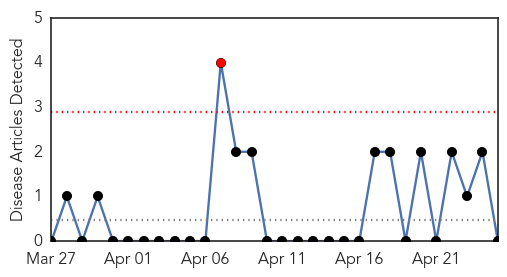
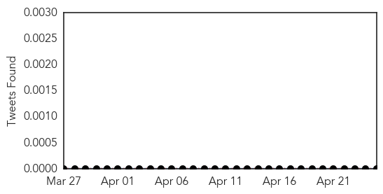
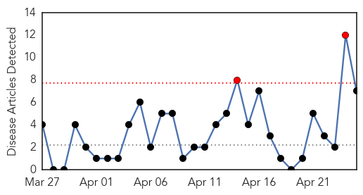
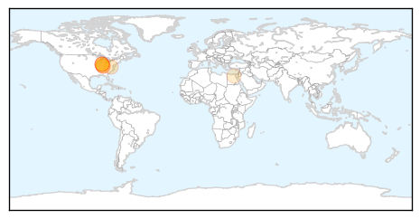
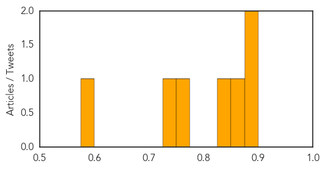

Mold/Fungal
30-Day Web Trend
1 alerts, 0 warnings

30-Day Twitter Trend
0 alerts, 0 warnings

Article Locations

Article Confidences

Top Articles:
-
No articles found for Apr 25, 2015
Top Tweets:
-
No tweets found for Apr 25, 2015
Hepatitis
30-Day Web Trend
2 alerts, 0 warnings

30-Day Twitter Trend
0 alerts, 0 warnings

Article Locations
Article Confidences
Top Articles:
- 0.879
- Indiana HIV outbreak, hepatitis C epidemic sparks CDC alert
- 0.877
- Indiana HIV outbreak, hepatitis C epidemic sparks US alert
- 0.861
- Indiana HIV outbreak, hepatitis C epidemic sparks CDC alert
- 0.848
- CDC Issues Alert Following Indiana HIV Outbreak
- 0.766
- Alarming Relation Between IV Drug Use and HIV and Hep C Found in Indiana
- 0.739
- Virginia Health Department Officials in Indiana to Help Fight HIV Epidemic
- 0.581
- 1 dead as mass poisoning hits Egyptian town
Top Tweets:
-
No tweets found for Apr 25, 2015